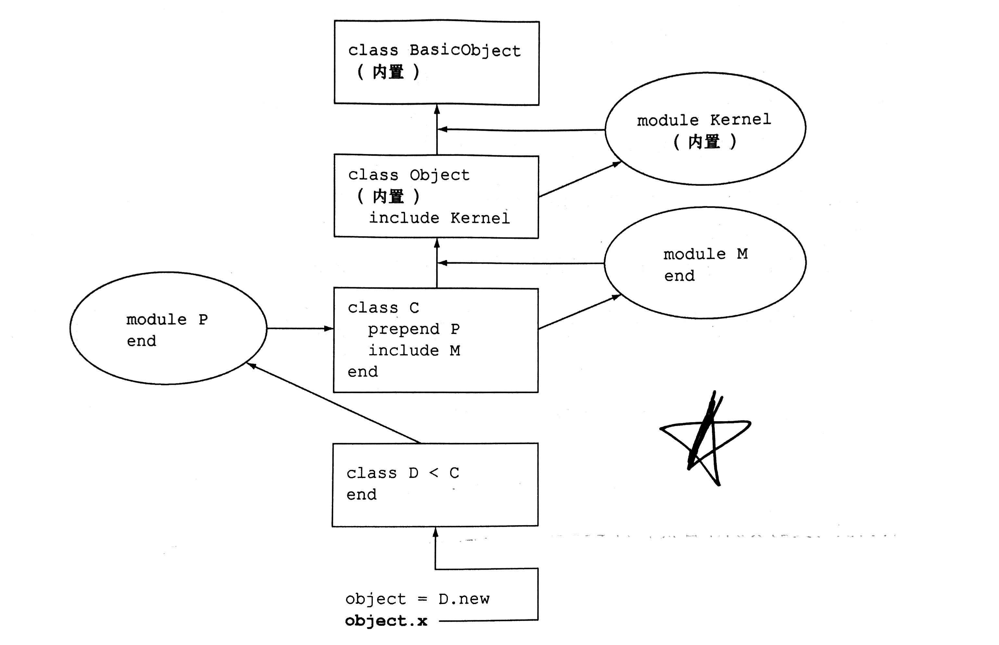

标识符
| 标识符 | 例子 |
|---|---|
| 局部变量 | first_name |
| 实例变量 | @first_name |
| 类变量 | @@first_name |
| 全局变量 | $FIRST_NAME |
| 常量 | FIRST_NAME |
| 关键字 | class |
| 方法名 | 同局部变量 |
类变量
类变量的作用域并不属于类作用域，而是输入类层级的作用域。它提供了一种可以在类和类的实例之间共享数据的存储机制，但是对其他对象不可见。 1
2
3
4
5
6
7
8
9
10
11
12
13
14
15
16
17
18
19
20
21
22
23
24
25
26
27
28
29
30
31
32
33
34
35
36
37
38
39
40
41
42
43
44
45
46
47
48
49
50
51
52
53
54
55class Car
@@makes = []
@@cars = {}
@@total_count = 0
attr_reader :make
def self.add_make(make)
unless @@makes.include?(make)
@@makes << make
@@cars[make] = 0
end
end
def self.total_count
puts "#{@@total_count}"
end
def initialize(make)
if @@makes.include? make
puts "Create a new make #{make}"
@make = make
@@cars[make] += 1
@@total_count += 1
else
raise "no such make"
end
end
def make_mates
@@cars[self.make]
end
def total_count
puts "#{@@total_count}"
end
end
# my_car = Car.new "xx"
Car.add_make("BMW")
my_car = Car.new "BMW"
Car.total_count
puts my_car.make
my_car.total_count
=begin
Create a new make BMW
1
BMW
1
=end
父类和子类共享类变量
1 | class Parent |
常量
定义在类中的实例方法可以看到同样定义在类中的常量，但其他程序也可以看到这些常量
私有方法
私有方法不能显式地被接收者调用。因为当没有明确接收对象时，接收对象是self。所以如果接收对象是Test的一个实例时，是可以调用成功的。 1
2
3
4
5
6
7
8
9
10
11
12
13
14
15
16class Test
def a
puts "a"
end
def b
# self.a error
a
end
private :a
end
test = Test.new
test.a # error!
test.b # "a"
保护方法
只能在此对象的实例方法或此类(或子类)的另一个对象中直接调用受保护的方法。
1 | class Test |
Class and object
查看对象的原生方法
1 | p Object.new.methods.sort |
重开类
1 | class C |
单例方法
1 | obj = Object.new |
对象方法查找规则

类对象怎样查找方法
- 类是对象
- 类的实例也是对象
- 类对象有自己的方法、自己的状态和唯一标识
因此，类的对象方法查找规则是
- 从他的类
- 从超类和他们类更早的祖先
- 从存储在他们自身的单例方法
顶层方法
顶层方法作为Object类的私有方法被保存下来，它在任何地方可用，但是不能现式地指定接收者。
Self

1 | puts "In top level, self is: #{self}" |
Scope

1 | a = 0 |
控制流
case 子句
每个 ruby 对象都有一个 case 相等性判断方法: ===
1 | class Person |
比较和 Comparable 模块
如果类需要有完整的比较方法，可以由如下解决方案： - 混合名为 Comparable 的模块 - 定义 <=> 的比较方法做为实例方法，在这个方法内部需要定义"小于"，"等于"，"大于"的含义。
代码块（block) 和 关键字 (yield)
ruby 中的每个方法调用都遵循如下语法： 1. 接收者对象或者变量 2. 点（如果有明确的接收者则为必要条件） 3. 方法名 4. 参数列表（可选，默认为（）） 6. 代码块 （可选，没有默认）
- 代码块可以使用 {}, 也可以使用 do while 提供；
- 如果提供的代码块在方法中不能提供，并不会发生错误；
- 代码块和方法一样，可以接受参数；
- yeild 的实际总用是转移控制权与作用域到代码块（可以跳回来）。
- 代码块是一个闭包(closure)
1 | def block_scope |
String
here-doc
1
2
3
4
5text = <<EOM.to_i
10
EOM
puts text # 10索引
1 | string = "zhangruochi" |
Enumerable
在ruby中，对象之间共有的特性通常都被放在模块里，集合类型也不例外：Ruby中的集合类型对象通常都包含 Enumerable 模块。
Each
任何枚举类型都包含一个each方法，其作用是将其中的元素逐个地作为参数传递给代码块。
1 | # 这里的每个方法都是基于each构建 |
Rainbow 混合了Enumerable模块，则自动赋予了整套基于 each 方法构建的方法。 1
2
3
4
5
6
7
8
9
10
11
12class Rainbow
include Enumerable
def each
yield "Red"
yield "Orange"
yield "Green"
end
end
a = Rainbow.new
p a.map(&:upcase)
# ["RED", "ORANGE", "GREEN"]
符号参数
可以在方法参数的位置使用如:upcase这样的符号并在前面加上&，它的效果与在代码块中调用每个元素同符号名称相等的方法的作用相同。 1
p ["A","B","C"].map(&:downcase)
Enumerator(枚举器)
- 迭代器本质上是一个方法，它将一个或多个元素传递到代码块中。
- 枚举器本质上一枚举器是一个简单的可枚举对象。它有 each 方法，并使用Enumerable模块定义其所有常用的方法。
- 枚举器只需要有一个“迭代每一个”的逻辑，它已经知道后面的事情可以一一展开。
- Enumerator.new 伴随一个包含稍后会用到的 each 逻辑的代码块
- 创建一个基于可存在枚举对象的枚举器，这样枚举器的 each 方法就会从那个枚举对象的特定方法中抽取它的元素用于迭代
1 | e = Enumerator.new do |y| |